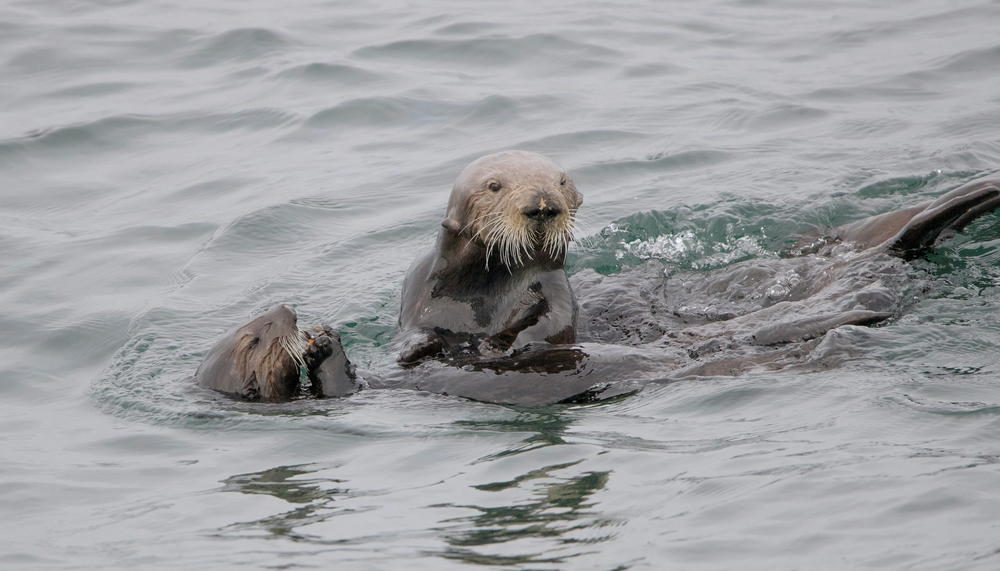

Pequenas, fofas e incríveis!

Descubra o mundo fascinante das lontras e conheça melhor esses animais encantadores.
Acessar formulário 💜Sobre as lontras 🦦
As lontras são animaizinhos superfofos que adoram nadar, mergulhar e brincar na água.
Elas também são muito inteligentes! Algumas usam pedrinhas para abrir conchas, e as lontras-marinhas podem segurar as patinhas umas das outras enquanto descansam.
10 curiosidades sobre as lontras 💜
-
Elas podem dar as patinhas!
Lontras-marinhas podem segurar as patas umas das outras enquanto flutuam.
-
Usam ferramentas!
Algumas usam pedras para abrir conchas e conseguir alimento.
-
Têm uma pelagem superdensa!
A pelagem ajuda a conservar o calor do corpo na água fria.
-
Têm bolsos secretos!
Possuem dobras de pele sob as patas dianteiras para guardar comida e pedras.
-
Fecham as narinas ao mergulhar!
Algumas espécies conseguem fechar as narinas e as orelhas debaixo d'água.
-
São nadadoras ágeis!
Seus corpos alongados e suas caudas ajudam na movimentação pela água.
-
Cuidam muito do pelo!
A limpeza da pelagem ajuda a manter o isolamento térmico.
-
Podem dormir boiando!
Lontras-marinhas descansam de barriga para cima e podem se enrolar em algas.
s
-
Têm uma dieta variada!
Dependendo da espécie, comem peixes, caranguejos e moluscos.
-
Ajudam a proteger o oceano!
Ao comer ouriços-do-mar, ajudam a preservar florestas submarinas de algas.
Quer conhecer ainda mais as lontras? 🦦
Descubra mais informações sobre esses animaizinhos incríveis!
Conheça mais sobre as lontras 💜